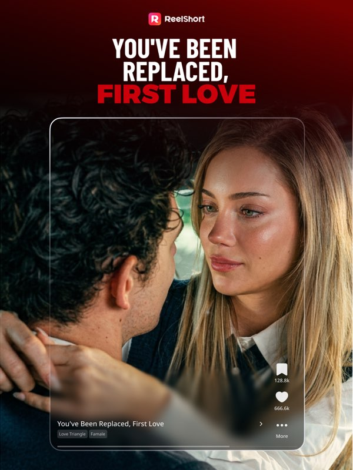

ReelShort 两年半：从互动小说基因到竖屏短剧头部
复盘 ReelShort 从 Crazy Maple Studio 互动小说起家、切入真人短剧赛道、靠金币加订阅双轨商业化坐稳欧美市场的迭代节奏，以及下一步可能往哪走。
现在的 ReelShort 是什么样？去reelshort官网打开它，首页推来的是一部部英文原创竖屏短剧，划两下就能看，金币攒够了或者买了 VIP 订阅，就能解锁后续集数——看起来就是个"短剧版 TikTok"，没什么特别的。但如果你在它刚出来的时候就用过，再看现在这版，会发现它变了太多。
我算是比较早就关注它的那批人了。最早让我留意到它的不是短剧本身，而是它背后的公司——Crazy Maple Studio。这家公司之前一直做互动小说，就是那种"你选一个选项，主角的命运就变了"的文字冒险。2023 年初他们突然转向真人短剧赛道，推出了 ReelShort。这个转向本身就让人好奇：一群写互动小说的，怎么拍起短剧来了？
起步：从文字分支到视频分支
第一代 ReelShort 其实还带着很重的互动小说基因。片库里最早的一批剧，很多都带互动选项——播到关键冲突点，画面弹出"扇他的脸"或"把他们锁在里面"，你点一个，剧情就沿那个分支继续。这在当时是个很新鲜的东西：真人拍摄、竖屏格式、还能自己选走向。官方当时的宣传里直接把它称作"第一部互动真人短剧"。
但很快他们就发现了问题。互动剧的制作成本比普通短剧高太多——每多一个分支，就要多拍一套素材，后期剪辑量也翻倍。而用户的反馈是：互动选项看着有意思，但真追起剧来，大多数人还是想顺着一条主线看下去。于是 ReelShort 做了它的第一个关键转向：把互动剧保留为特色品类，但把重心转移到线性叙事的普通短剧上。
这个决定几乎决定了它后来能走多远。如果死磕互动剧，它可能只会成为一个小众产品——就像那些独立游戏工作室做的互动视频作品，口碑不错但体量上不去。转向线性短剧之后，它才能真正规模化地做内容。
扩张：内容密度和商业化的双轮
转向之后，ReelShort 的迭代节奏明显加快了。
先看内容端。早期的剧量很少，翻来覆去就那几十部。后来开始每周上新，题材从最初的霸总言情，慢慢扩展到悬疑、喜剧、科幻、恐怖——苹果商店页列了四大主流题材，现在每个题材下都有上百部。这个扩张速度在当时的短剧赛道里是最快的。
然后是商业化。ReelShort 早期是纯金币模式：看广告赚金币，金币解锁集数。但很快他们又加了 VIP 订阅——周订阅、月订阅，订阅用户可以直接跳过解锁环节，一口气看完。这个"金币加订阅"的双轨体系是他们做的一个聪明设计：想免费看的人可以慢慢攒金币，想省时间的人从官方下载装客户端花订阅，两条路都给，不逼用户选边站。
但商业化这件事他们也踩过坑。早期的金币获取速度和解锁成本之间的平衡做得不太好——看三分钟广告才能解锁一集，很多人在这个环节就流失了。后来他们调整了金币体系，前几集免费看，从第四集开始解锁，而且金币获取速度提了一倍。这个改动之后，用户留存率明显上去了。
多端：不只是手机
ReelShort 的另一个迭代方向是多端覆盖。
最早它只有手机端，iOS 和安卓。然后出了网页版——电脑上打开浏览器就能看，播放器的交互甚至比手机端更从容，点选互动选项的时候不用在小屏幕上戳来戳去。再后来加了跨设备同步：手机上看到第三集，换电脑打开网页版，直接从第三集中间接着播。金币余额、订阅状态、追剧列表全部同步。
这个功能看起来不像是核心卖点，但对重度用户来说太重要了。短剧的观看场景本来就是碎片化的：地铁上用手机看几集，晚上回家换电脑继续追，第二天早上想起来还有一部没看完，用另一台手机登录也能接着看。如果没有跨设备同步，每次换设备都要从头找进度，追剧体验会打折很多。
还有一个小细节能说明他们对多端的重视：界面语言。苹果商店页列了 20 多种界面语言，简体中文、繁体中文都在里面。虽然内容以英文原创短剧为主，但中文用户可以全程用中文界面操作。界面语言和字幕语言是分开的——界面可以中文化，但剧集字幕得逐剧确认有没有中文。这个设计挺务实的，没有硬逼内容也全中文化，而是把界面先做好。

团队一直在死磕什么
复盘下来，我觉得 ReelShort 团队的优先级一直很清楚：
第一是内容密度。从早期几十部剧到现在的上千部，上新频率从"偶尔"到"每周"，题材从单一到覆盖四大主流方向——他们一直在死磕"有没有足够多的内容让用户持续有东西看"。这个优先级从第一天就没变过。
第二是观看体验的流畅度。断点续播、跨设备同步、推荐系统的调教——这些都是围绕"让用户想追剧的时候能无缝接上"做的。推荐系统这块尤其值得说：新号引导里可以勾选喜欢的题材，系统会根据你看什么、弃在哪一集、重复看哪些片段来调推荐，详细的调教技巧可以翻reelshort文档里的偏好设置部分。如果你看一集就退，系统会收到信号；硬着头皮刷完反而会被误判为喜欢。这说明他们在推荐算法上是花了心思的，不是随便推。
第三是商业化的平衡。金币和订阅的双轨体系一直在微调——金币获取速度、解锁时机、订阅价格，改了好几轮。他们没有走极端：要么全免费靠广告，要么全付费靠订阅，而是一直在找两者之间的平衡点。
那什么是他们一直没做的？UGC 工具。从第一代到现在，ReelShort 始终是纯消费端，没有给用户提供创作工具、上传入口、剪辑功能。这和他们的出身有关——Crazy Maple Studio 本来就是做原创内容的，不是做平台的。这个基因到现在没变过。
下一步会怎么走
如果照这个迭代规律推的话，我觉得下一步可能的方向有几个。
一是互动剧的回归。现在互动剧只是一个特色品类，量不大。但如果他们能把互动剧的制作成本压下来——比如用 AI 辅助分镜和后期——互动剧可能会从"小众特色"变成"内容矩阵的一部分"。毕竟他们有互动小说的积累，这块是他们的老家当。
二是本土化内容。现在的剧全是英文原创，面向欧美市场。但界面已经支持 20 多种语言了，如果哪天开始做非英文的原创内容——比如西班牙语、阿拉伯语——那就是真正的全球化布局了。这个动作他们还没做，但界面语言的准备已经提前到位了。
三是更智能的推荐。现在的推荐系统靠行为数据，但还比较粗。如果能引入更多维度——比如用户在评论里聊了什么、收藏夹里攒了什么类型的剧——推荐会更准。这块他们有积累，继续往下挖是顺势而为。
当然这些都只是从迭代规律推的，不是官方口径。产品的走向有时候也取决于外部变量——比如竞争对手出了什么新东西、用户口味突然变了、平台政策调整了。但从 ReelShort 两年半的节奏来看，他们是那种想清楚了就持续投入的团队，不是今天追风口明天换方向的那种。
回到开头那个问题：从一群写互动小说的，变成一个欧美市场头部的短剧产品，这中间的跨度其实没那么大。核心逻辑没变——都是给用户讲故事，让用户愿意花时间听下去。只是载体从文字变成了视频，分支选择从文本选项变成了真人剧情，商业化从内购道具变成了金币加订阅。基因没变，只是换了件外套。
这套资料在三个仓库都能拿到——GitHub、Gitee、GitCode 各有一份，内容是同步的，国内访问的话 Gitee 和 GitCode 会快一些。仓库里整理了 ReelShort 各版本的变更记录、功能说明和常见问题排查，持续在更新。